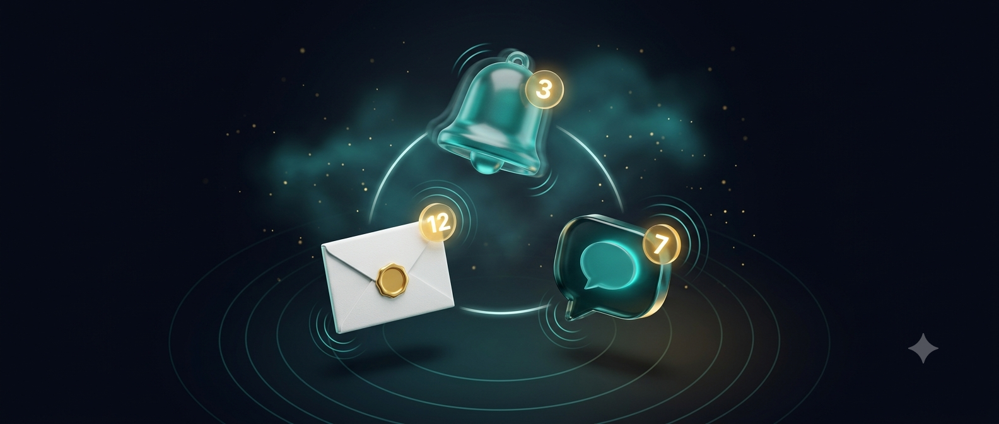
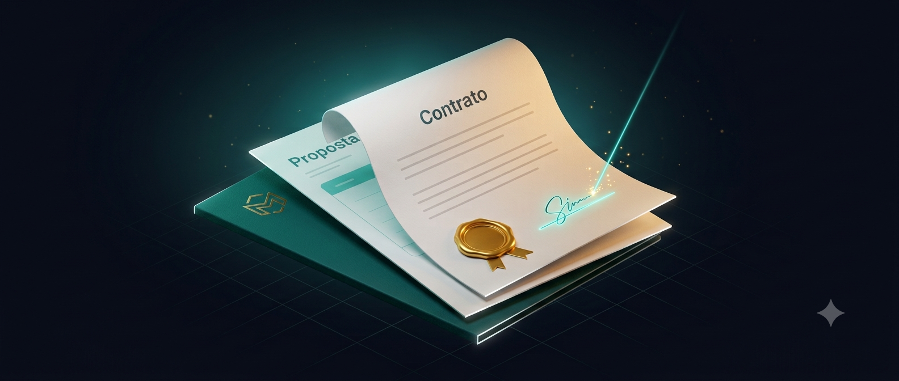
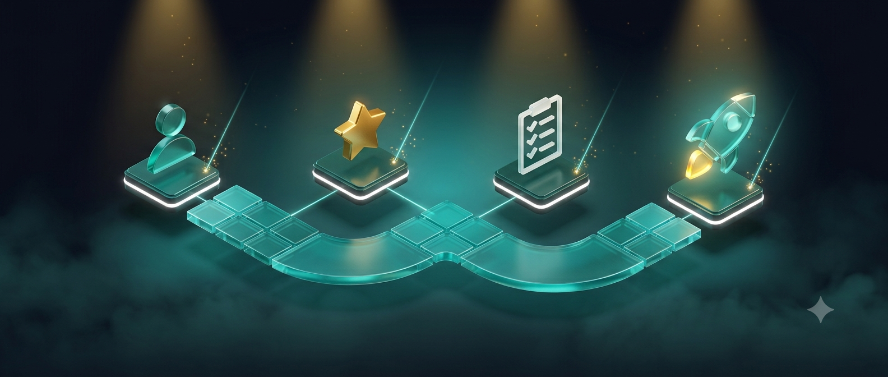

Atendimento ágil e personalizado 24/7.
Transformamos a operação de Prestadores de Serviços com Inteligência Artificial
Automações e Agentes de IA que eliminam o trabalho manual do seu atendimento e backoffice. Reduza custos, automatize processos e multiplique a eficiência da sua equipe.
MAIS TEMPO CONSTRUINDO
MENOS TEMPO OPERANDO
MAIS TEMPO CONSTRUINDO
MENOS TEMPO OPERANDO
O que fazemos
Muito além do Hype.
Alguns dos processos que nossos Agentes realizam com excelência:
Qualificação de leads e suporte técnico.
Agendamento e gestão de agendas.

Lembretes e notificações automáticas via Whatsapp, e-mail e SMS.

Geração automática de contratos, NFs, documentos e propostas.

Onboarding automatizado para novos clientes.
Não existe Inteligência Artificial “plug-and-play”.
E esse é o motivo pelo qual muitos empresários não estão tendo resultado com Inteligência Artificial.
Compram cursos do tipo “implemente você mesmo”. Assinam ferramentas do tipo “conecte seu whatsapp e comece a usar no mesmo instante”.
Aqui que mora o perigo. Se você passou por isso, sinto lhe dizer que seu cérebro foi guiado pela promessa de caminho mais fácil.
O resultado é um robô genérico, nada humanizado e que afasta o usuário ao invés de converter (isso quando ele funciona sem nenhum problema de configuração).
Aqui na Eugen.IA, nós jogamos o jogo da engenharia e não da promessa milagrosa. Um Agente de IA autônomo de verdade não é um produto de prateleira.
Ele exige desenho de processos e conexões profundas para conectar seu WhatsApp aos bastidores do seu negócio, CRM, ERP, documentos e planilhas.
Por isso, nós não te vendemos uma ferramenta para te dar mais trabalho. Nós mapeamos sua rotina e entregamos o ecossistema 100% pronto e integrado aos sistemas que você já usa. E o melhor: mais acessível do que você imagina.
Nós fazemos a engenharia pesada para você ter o que realmente importa:
Mais tempo construindo. Menos tempo operando.Conheça a Eugênia
Nossa Agente de IA está pronta para lhe dar um gostinho de como a tecnologia funciona na prática. Converse com a Eugênia e tire suas próprias conclusões.
Falar com a EugêniaPerguntas frequentes
Somos uma empresa de Engenharia Operacional especializada em projetar ecossistemas de automação e Agentes de IA sob medida para Prestadores de Serviços (como escritórios de advocacia, clínicas de saúde e consultorias). O nome carrega nossa filosofia: a união entre o "Eu" (o talento humano) e a "Gen IA" (Inteligência Artificial Generativa) para potencializar o seu negócio.
Trabalhamos com o modelo Done-For-You (feito para você), dividindo o investimento em duas etapas: um valor único de Setup para a engenharia e implantação da arquitetura (como nosso Gerador Automático de Contratos), e uma mensalidade de manutenção para suporte das APIs, monitoramento de servidores e refinamento contínuo do(s) Agente(s) de IA. Os valores exatos dependem da complexidade da sua operação e são apresentados logo após a sua Sessão de Diagnóstico.
Absolutamente não (A não ser que você queira, mas recomendamos substituir apenas quem não deseja trabalhar). Nosso objetivo é substituir as tarefas robóticas e invisíveis que sobrecarregam sua recepção e seu backoffice, e não as pessoas. A IA assume o trabalho repetitivo — como preencher contratos e confirmar agendas — para devolver o tempo técnico da sua equipe para o que realmente gera faturamento: decisão, relacionamento e vendas.
Pelo contrário, você ganha controle gerencial. Processos manuais são invisíveis e propensos a falhas humanas. Os ecossistemas que construímos são 100% rastreáveis, previsíveis e auditáveis. Você terá total visibilidade sobre cada lead, contrato ou agendamento através de uma central de atendimento limpa e intuitiva.
Nossos sistemas foram desenhados justamente para quem está sem tempo. O modelo é Done-For-You: nós fazemos toda a engenharia pesada por trás dos panos. Sua única dedicação será uma chamada inicial de 30 minutos (Sessão de Diagnóstico) para nos mostrar seus gargalos. Nós mapeamos, construímos, integramos e entregamos tudo pronto e testado para a sua equipe usar.
Não trabalhamos com soluções genéricas de prateleira, porque sabemos que não existe Inteligência Artificial plug-and-play. Cada projeto da Eugen.IA começa com o mapeamento da sua rotina atual. Desenhamos a arquitetura da IA para se moldar ao seu processo e aos sistemas que você já utiliza hoje — e não o contrário.
Porque a maioria das ferramentas baratas do mercado vende apenas um robô engessado de mensagens que irrita o cliente e não resolve o seu backoffice. Na Eugen.IA, nós aplicamos o Método 5D de engenharia. Começamos pelo diagnóstico e pelo desenho do fluxo de dados antes de mover uma única linha de código, garantindo que o sistema traga retorno financeiro e paz operacional desde o primeiro dia.
Você não precisa entender de códigos, prompts ou APIs. Entregamos a solução 100% instalada, configurada e integrada. Além disso, nossa mensalidade cobre toda a manutenção e suporte técnico do sistema para você nunca se preocupar.
Segurança e conformidade são prioridades na nossa engenharia. Operamos em estrita conformidade com a LGPD. Os dados e históricos de atendimento rodam em servidores dedicados e seguros, integrados diretamente aos seus sistemas atuais via API. Nossos agentes de IA sempre se identificam como assistentes virtuais na primeira interação, mantendo total transparência.
Atendemos de forma focada toda a Região Sul (RS, SC e PR) e prestadores de serviços de todo o Brasil através de atendimento e implantação 100% remotos, utilizando salas de reunião virtuais e suporte dedicado online.
Sim, sempre que necessário, o Agente consegue acionar o atendimento humano para que sua equipe continue pelo próprio CRM ou Whatsapp, sem necessidade de encaminhar para outro número ou alternar entre sistemas.